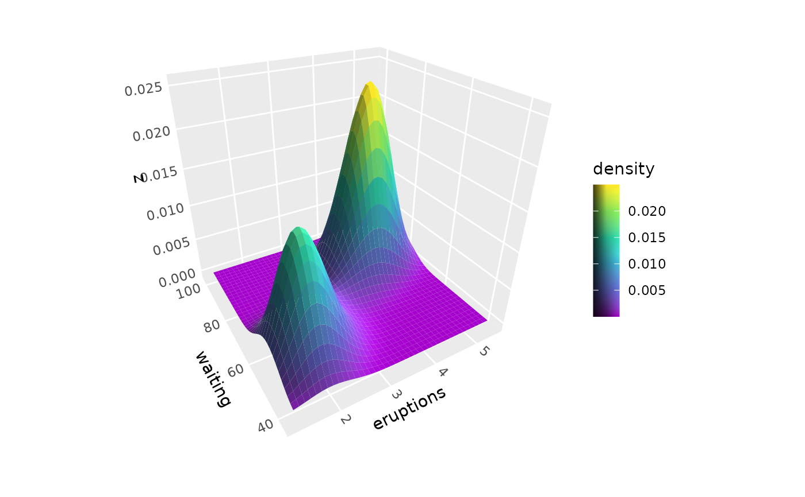
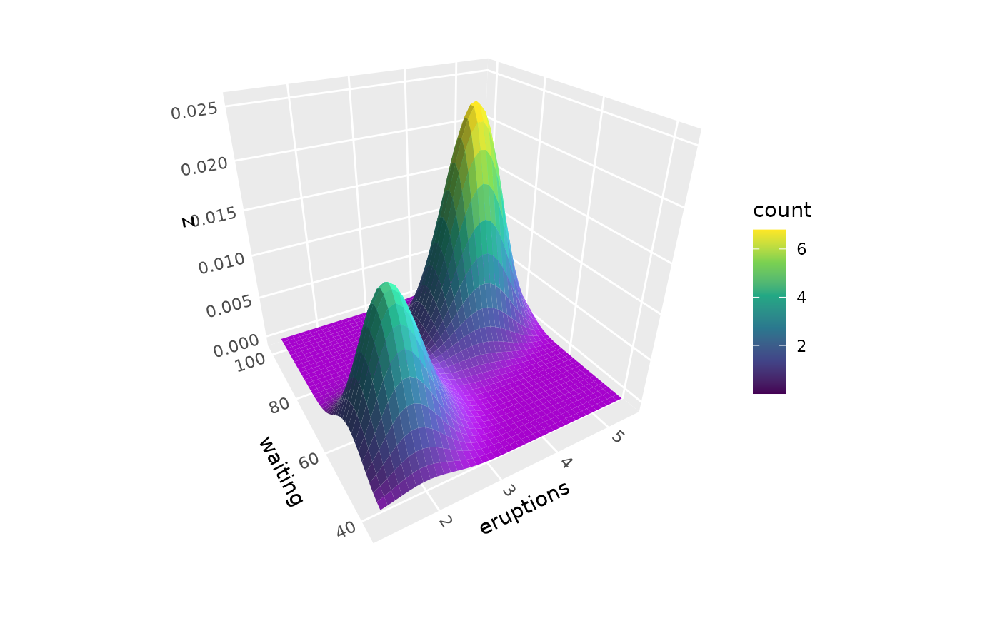
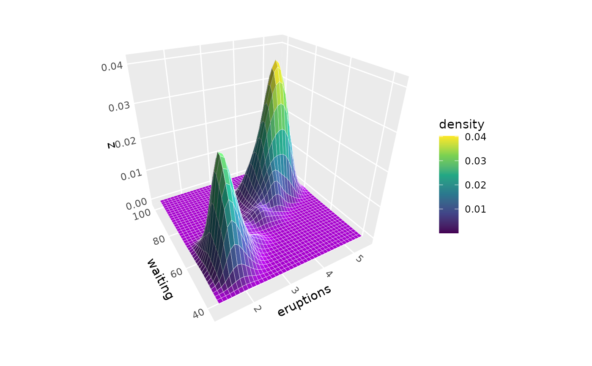
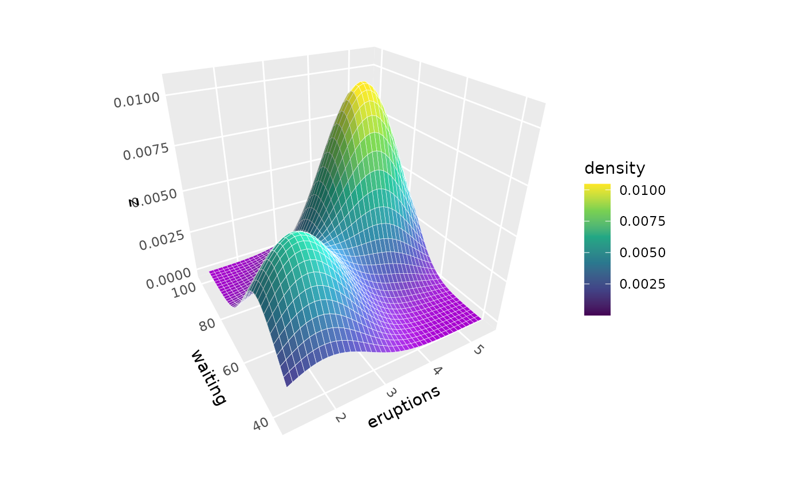
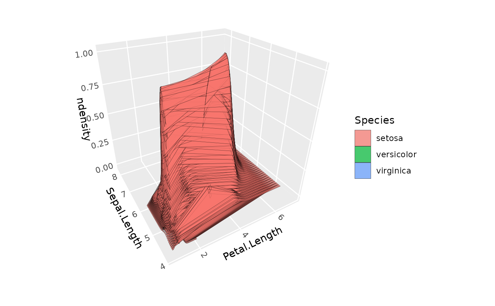
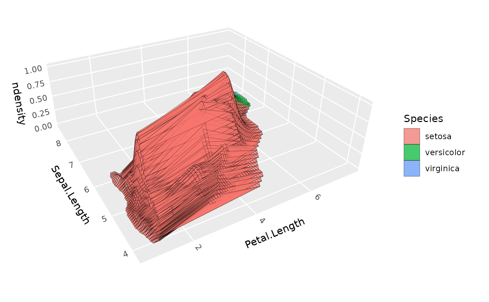
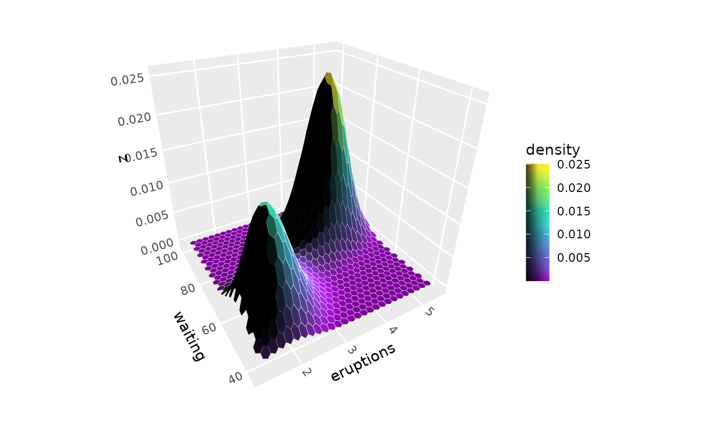

Creates 3D surfaces from 2D point data using kernel density estimation. The density values become the z-coordinates of the surface, allowing visualization of data concentration as peaks and valleys in 3D space.
Usage
stat_density_3d(
mapping = NULL,
data = NULL,
geom = GeomPolygon3D,
position = "identity",
n = 30,
h = NULL,
adjust = 1,
pad = 0.1,
min_ndensity = 0,
light = lighting(),
na.rm = FALSE,
show.legend = NA,
inherit.aes = TRUE,
...
)Arguments
- mapping
Set of aesthetic mappings created by
aes(). This stat requiresxandyaesthetics. By default,fillis mapped toafter_stat(density)andzis mapped toafter_stat(density).- data
The data to be displayed in this layer. Must contain x and y columns with point coordinates.
- geom
The geometric object to use display the data. Defaults to GeomPolygon3D for proper 3D depth sorting.
- position
Position adjustment, defaults to "identity".
- n
Either a single integer specifying grid resolution in both dimensions, or a vector of length 2 specifying
c(nx, ny)for different resolutions. Default is 30 (lower than ggplot2's default for better performance with 3D rendering).- h
Bandwidth vector. If
NULL(default), uses automatic bandwidth selection viaMASS::bandwidth.nrd(). Can be a single number (used for both dimensions) or a vector of length 2 for different bandwidths in x and y directions.- adjust
Multiplicative bandwidth adjustment factor. Values greater than 1 produce smoother surfaces; values less than 1 produce more detailed surfaces. Default is 1.
- pad
Proportional range expansion factor. The computed density grid extends this proportion of the raw data range beyond each data limit. Default is 0.1.
- min_ndensity
Lower cutoff for normalized density (computed variable
ndensitydescribed below), below which to filter out results. This is particularly useful for removing low-density corners of rectangular density grids when density surfaces are shown for multiple groups, as in the example below. Default is 0 (no filtering).- light
A lighting specification object created by
lighting()- na.rm
If
TRUE, removes missing values before computing density. IfFALSE, missing values will cause an error. Default isFALSE.- show.legend
Logical indicating whether this layer should be included in legends.
- inherit.aes
If
FALSE, overrides the default aesthetics.- ...
Other arguments passed on to
layer(), such ascolour,fill,alpha, etc.
Aesthetics
stat_density_3d() requires the following aesthetics from input data:
x: X coordinate of data points
y: Y coordinate of data points
And optionally understands:
group: Grouping variable for computing separate density surfaces
Additional aesthetics are passed through for surface styling
Computed variables
x,y: Grid coordinates for the density surfacez: Same asdensity(for 3D surface height)density: The kernel density estimate at each grid pointndensity: Density estimate scaled to maximum of 1 within each groupcount: Density estimate × number of observations in group (expected count)n: Number of observations in each grouplight: Computed lighting value (numeric for most methods, hex color fornormal_rgb)normal_x,normal_y,normal_z: Surface normal componentsslope: Gradient magnitude from surface calculationsaspect: Direction of steepest slope from surface calculationsdzdx,dzdy: Partial derivatives from surface calculations
Grouping
When aesthetics like colour or fill are mapped to categorical variables,
stat_density_3d() computes separate density surfaces for each group, just
like stat_density_2d(). Each group gets its own density calculation with
proper count and n values.
See also
stat_density_2d() for 2D density contours, stat_surface_3d() for
surfaces from existing grid data, lighting() for lighting specifications,
coord_3d() for 3D coordinate systems.
Examples
library(ggplot2)
# Basic density surface from scattered points
p <- ggplot(faithful, aes(eruptions, waiting)) +
coord_3d() +
scale_fill_viridis_c()
p + stat_density_3d()

# Color by alternative density values
p + stat_density_3d(aes(fill = after_stat(count)))

# Adjust bandwidth for smoother or more detailed surfaces
p + stat_density_3d(adjust = 0.5, color = "white") # More detail

p + stat_density_3d(adjust = 2, color = "white") # Smoother

# With lighting effects
p + stat_density_3d(light = lighting(blend = "fill", blend_mode = "hsl"))

# Higher resolution grid for smoother surfaces
p + stat_density_3d(n = 50, color = "black", fill = "darkgreen", alpha = 0.8,
light = lighting(direction = c(1, 1, 0.5), blend = "fill"))

# Multiple density surfaces by group,
# using normalized density to equalize peak heights
ggplot(iris, aes(Petal.Length, Sepal.Length, fill = Species)) +
stat_density_3d(aes(z = after_stat(ndensity)),
color = "black", alpha = .7) +
coord_3d()

# Same, but with extra padding and with
# density filtering to remove rectangular artifacts
ggplot(iris, aes(Petal.Length, Sepal.Length, fill = Species)) +
stat_density_3d(aes(z = after_stat(ndensity)),
pad = .3, min_ndensity = .001,
color = "black", alpha = .7) +
coord_3d(ratio = c(3, 3, 1))